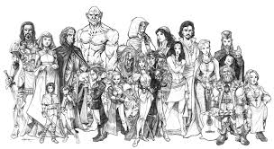
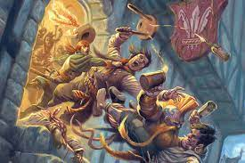
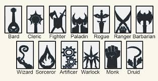
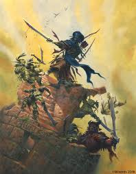
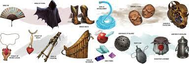

Knowledge is Power
The life of the Adventurer. It can be filled with incredible beauty, glory of the highest caliber, and riches beyond your wildest dreams. It can also be filled with untold horror, abject misery, and death. In fact, the latter is most often the case. While death is not to be feared, if you hope to survive long enough to obtain even a modicum of the riches and glory previously mentioned you will need, at the very least, a basic understanding of the ways of the adventurer. You will find this information within these pages.
This site is meant to be a collection of Dungeons and Dragons information and rules. As with all things, it is a work in progress
Races
Visit any of the great cities of the worlds of the cosmos and what do you see? People. People of all shapes, sizes, and features.
This page is the listing for playable races. They are broken down into three categories: common, exotic, and monstrous.
Backgrounds
Very few people just pop up out of nothing. Like it or not, where you come from has a deep impact on your entire life. For good or for ill.
This page lists character backgrounds as well as features that go along with them.
Classes
Class is the primary definition of what you can do. It is more than a profession; it is your calling. It shapes the way you interact with the world.
This page has the listings for the official Dungeons and Dragons classes as well as their subclasses.
Spells
Magic permeates the worlds of the cosmos. It has the potential to create and destroy entire universes. Proper use of it may save your life.
This page has the listing of all official spells in the game. They can be filtered by class, school, and level.
Feats
Feats represent your talents or areas of expertise. They embody training, experience, and abilities beyond what your class provides.
This pages lists the official feats. They are broken down by standard feats and race specific feats.
Items
For an adventurer, the availabiltity of armor, weapons, rope, and similar goods is of paramount importance, since proper equipment can mean the difference between life and death.
This page lists official items within the game. You will find gear such as weapons and armor, travel rations, and the like.
Advice
Advice is always useful.. even when unsolicited. If nothing else, it can at least be an indication of what you should not do.
This page has links to various video channels that have character builds, rules explanations, and tips and tricks.